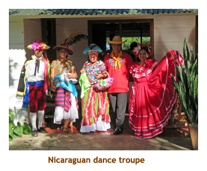
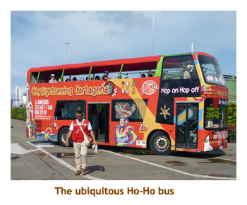
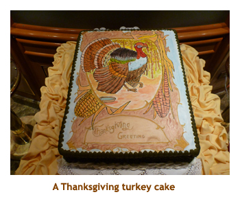

[ Home ] [ Travel ] [ Photography ] [ Pets ] [ Games] [ Rowing] [ Physics ]


Cruising on the Island Princess
Travel
Cruises
Past Cruises (Diaries)
Future Cruises
Rogues Galleries
Land Trips
Diaries (Land Trips)
Hawai'i - Big Island - 04'01
Hawai'i - Maui - 05'02
Hawai'i - Big Island - 04'03
Hawai'i - Kaua'i - 09'04
Hawai'i - Big Island - 04'06
Hawai'i - Maui - 04'06
Mainland China - 05'07
Phoenix, Arizona - 12'07
Greek Isles - 05'08
Hawai'i - Kaua'i - 09'08
Hawai'i - Big Island - 09'09
Hawai'i - Maui - 05'12
Hawai'i - Big Island - 04'13
Ireland - 08'13
Mexico - Cancun 11'13
France/Belgium/Lux 07'15
Hawai'i - Big Island - 05'17
England / Wales - 06'17
Hawai'i - Big Island - 09'19
Photography
Cameras
Underwater
Pets
Tara
Blackie
Whitey
Muffy
Ollie
Rusty
Fluffy
Rufus&Dufus
Games
Rowing
Physics
Rating (out of 5):
Ship  Food
Food  Service
Itinerary
Service
Itinerary
Marjorie has had a "free" graduation cruise offer hanging around for several years after completing an online Princess T/A course. This cruise especially interested us so Marjorie finally cashed in her chips. I say "free" graduation cruise because it actually just covered the base price of an inside cabin for T/A and spouse. On top of the $0, we opted to pay an upgrade charge to a balcony cabin, plus field the taxes and fees. But still it meant a very cheap cruise. The whole point of the graduation cruise concept was to allow the T/A to experience the ship as an Elite passenger (15 cruises or 150 cruise days) with all the Elite benefits. However, as Marjorie was already Elite, this was a nice but useless gesture. As for me, being as I was on a "free" ticket, my own Elite status was revoked and I was catagorized as a first time cruiser (the dreaded blue card) but with 20 cruises under my belt. Figure that one out! So I lost out on free laundry, free internet and some free presentations and parties. The free bar fridge setup was per cabin, so nothing was lost there. As it turned out Marjorie's internet was sufficient for both of us. We used the self-serve laundromats and probably would have skipped the parties anyways. So no big loss.
The only committment for Marjorie was filling in the answers to several sheets of questions about our cruise. This involved attending events throughout the cruise or talking to the ship's personnel to find out specific details about our cruise (ie. "how many marriages were performed on our cruise?" and "How many bottles of champagne were used in the champagne waterfall event?"). She must have answered them all correctly as we were not tossed from the ship.
The ship was full (2205 pax, double occupancy of 2145). Although a recent refit in 2015 added 40 or so cabins foregoing public space, we didn't find the ship overly crowded. We had no problem getting seats in the theater, unlike the Grand Class ships. The only strange casualties of the refit was squeezing the fitness center into a dark closet on deck 6, surrounded by cabins, and blocking off the aft promenade deck with new cabins preventing a continuous walk around the ship. Overall we enjoyed the ship though.
A number of items contradicted our usual behaviour on a cruise:
- Against our usual better judgement, we flew down to the cruise on embarkation day. Normally we fly a day ahead, and overnight in a local hotel - just in case. Sure enough we almost missed out connecting flight in Seattle due to delays in Calgary.
- I decided to have a complete rest from my rowing regimen and didn't do the gym once in 15 days. I didn't miss it and was able to pick right up again when we returned home. On the other hand I didn't miss a single meal.
- We had 7 sea days and 6 port days. We only booked two excursions and both of them were afternoon outings. Hence we never had a single day where we had to be up by a certain time.
- As noted above I lost my Elite privileges which really didn't hurt. In fact I had a delightful time showing my "blue card" with twenty cruises logged! (Princess puts the number of past cruises in the lower right corner of the cruise card).
Pre-cruise / Day 1 (Nov 10, 11) - Travel to LA and boarding
 Our flight to LA (through Seattle)
was at 6:00 AM, so we decided to overnight at the airport. Marjorie checked with
the brand new Marriott and scored a $49.00 T/A rate. Woohoo! So
at 6:00 PM the night before the cruise we drove to
Christina and Matt's to drop off the car and beg a ride to the airport. They dropped us at the hotel
about 8:00 PM and we did a quick explore then set our alarm for 3:30 AM. and went to bed. It
would have been nice to have had the time to enjoy the hotel, but we had to be at the airline
checkin by 4:00. Then it was through security and US customs preclearance. The lines
moved very quickly and we were at the departure gate with plenty of time to spare. We had a
very tight connection time in Seattle so were hoping the YYC flight would be ontime. Sure enough when
we were loaded they decided to de-ice the plane. We lost more than half an hour (oh, oh). The flight
to Seattle picked up some time. At Seattle we had to take a train to another terminal but
fortunately this was all within the secured area so we didn't have to repeat security. Even so
the plane was already loading when we got to the gate. Our flight to LA was ontime and we
arrived in LA about 10:30. Lots of time! We retrieved our luggage and then found the Princess
lady to join the bus ride to the cruise dock.
Our flight to LA (through Seattle)
was at 6:00 AM, so we decided to overnight at the airport. Marjorie checked with
the brand new Marriott and scored a $49.00 T/A rate. Woohoo! So
at 6:00 PM the night before the cruise we drove to
Christina and Matt's to drop off the car and beg a ride to the airport. They dropped us at the hotel
about 8:00 PM and we did a quick explore then set our alarm for 3:30 AM. and went to bed. It
would have been nice to have had the time to enjoy the hotel, but we had to be at the airline
checkin by 4:00. Then it was through security and US customs preclearance. The lines
moved very quickly and we were at the departure gate with plenty of time to spare. We had a
very tight connection time in Seattle so were hoping the YYC flight would be ontime. Sure enough when
we were loaded they decided to de-ice the plane. We lost more than half an hour (oh, oh). The flight
to Seattle picked up some time. At Seattle we had to take a train to another terminal but
fortunately this was all within the secured area so we didn't have to repeat security. Even so
the plane was already loading when we got to the gate. Our flight to LA was ontime and we
arrived in LA about 10:30. Lots of time! We retrieved our luggage and then found the Princess
lady to join the bus ride to the cruise dock.
We bused to the cruise dock (San Pedro) and arrived at the ship about 12:00. Check-in was fairly quick and we were soon aboard the ship. We immediately inquired about lunch served in the Main Dining Room (MDR) and were told "Yes". So, we dumped our carry-ons in our cabin and headed to the MDR. We had sidestepped the buffet crowds and landed in a peaceful venue that few passengers are aware of (on embarkation day). Note that not all cruise lines provide this service. After returning to our cabin our luggage was delivered. We unpacked and put everything away. Muster drill was at 3:30. Afterwards Marjorie was wandering about the ship and ran into Jim and Vickie, our trivia team mates from our previous Caribbean Princess cruise of the British Isles in June. What a pleasant surprise! Now we had a trivia team for the coming cruise. We had "anytime" dining and decided (as always) to go down to the MDR between 5:30 and 6:00. For dinner tonight I had prime rib. Cruise lines always seem to serve prime rib on embarkation day. It was very good. We were too tired to make the entertainment as it had been a long day. The clocks went forward an hour tonight. That was fine because we would be back on Alberta time.
Days 2, 3 (Nov 12, 13) - 2 days at sea
The next day was a 7:00 start again with breakfast in the MDR. We spent
the day alternating trivia sessions with periods of reading or wandering. For
dinner I had rock fish (unusual choice for me) which was very good. The
entertainment was a couple of guys - one a singer and one a cello player. They
were wonderful! They both also played piano very well. And, as a bonus, I knew
almost all of the music. A top notch performance!!
Day 4 (Nov 14) - Puerto Vallarta, first grocery stop
Days 5, 6 (Nov 15, 16) - A day at sea, then Huatulco
The next day we were up at 8:00 as we docked in Huatulco. We had
been here before and noticed a new shopping area, but otherwise not
much around. We had breakfast in the buffet, played a session of trivia, and
headed off the ship to explore the small town. It was very hot and humid.
We wandered around the shops for a while, stopping at an outdoor shop
(snorkeling, etc) where Marjorie used the wi-fi. (The sales lady
was from Vancouver!). We wandered back onto the ship for lunch.
Back onboard we walked around the ship and then settled for a read
on the promenade deck. For dinner I had lamb shank. Too big, but it was
very good. The singer/cellist duo were on again in the theater with a new show so
we just had to go. Once again they were excellent, we really enjoyed them.
We wandered the decks then went to bed.
Days 7, 8 (Nov 17, 18) - A day at sea, then San Juan Del Sur
The next day, we were up at 7:30 as we anchored off of San Juan Del Sur,
Nicaragua. This would be a new country to us as we had never stopped in
Nicaragua before. We had signed up for an afternoon excursion, so had the
morning to ourselves. We breakfasted in the MDR, then read and trivia'ed the morning away.
After our lunch in the buffet, we tendered to shore to meet our 12:45 excursion. The
bus left at 1:00 to the small village of Rivas where we visited the lovely
San Pedro Cathedral. Then we drove to the Amoya River which we
followed to a botanical garden on the shores of Lake Nicaragua. At the
gardens we had some local fruits and drinks, and were treated to some native
dancing. Guess who got pulled up on stage to make a fool of himself? Oh well,
I'll never see any of those people again! We drove back to the tender dock (by 4:00).
Halfway back to the ship the tender boat stopped. We had to wait for a repair
crew from the ship to tinker with the engine and get it running again. We were
back onboard by 5:00, so didn't miss dinner. I had roast beef and Yorkshire
pudding. We skipped the entertainment and did our own thing instead. I
am glad we made it to Nicaragua, but I wouldn't go there again. The people
are very poor and are just recovering from a civil war (Contras and Sandinistas).
There didn't seem to be any tourism infrastructure yet. Hopefully that will come!
|  |
Day 9 (Nov 19) - Puntarenas, Costa Rica
Our bus took us overland to a jungle park on a river where we clambored into sightseeing boats to see huge crocodiles and many species of herons and water birds. We saw several giant crocodiles sunning themselves on the shores, and a few more mostly hidden by the muddy waters . Each of them had been named by the guides - Osama Bin Laden, Mike Tyson, Madonna, etc. The water birds seemed to be at ease with the big crocs, often standing quite close to them. Apparently the river is rich in fish, so the crocs are rarely hungry. The variety of water birds was amazing - mostly new to us. After an hour or so on the river, we were bused to the terminus of a tourist railroad. We did a 45 minute journey through the woods, which wasn't too scenic. The railcars rocked (dangerously, to me) from side to side due to the uneveness of the tracks. I think that boating through crocs was much more interesting. In fact our journey to find beer in the morning was more interesting. We arrived back at the ship by 6:00 PM, so it was getting dark. For dinner I had seafood skewers with salmon, white fish, shrimp and scallops. Afterwards we did the evening trivia and went to bed. We put our clocks an hour ahead tonight which made it seem that we were going to bed at a more daring time.
Days 10, 11 (Nov 20, 21) - A day at sea then the canal
Note: I should mention that eating breakfast and/or lunch in the MDR could be a long, but pleasurable, process. The meal itself is easily an hour and we often met interesting people and continued talking at the table for at least another half hour. A few times the servers were making up the tables for the next meal when we left.
The next day we woke up at 6:00 AM at the entrance to the Panama Canal. After 10 days of sailing we were finally at the "raison d'etre" of the cruise. It was going to be a hot, humid day. We decided to have a quick buffet breakfast. However, when we got there most of the tables were taken by onlookers, due to the great forward facing view from the restaurant. So we grabbed some food and carried it back to our cabin to eat there with our balcony view. This was our second time through the canal, so we were most interested in seeing the new expanded section. From the old locks (the Miraflores locks) we could see the water storage tanks of the new route and the top of a ship passing through. The new locks are a triple lock system with the 85 foot total lift being done in one go. The old locks have a double lock system and a single lock system separated by a couple of kilometers. Hence, for that portion between the lock systems, the new canal is at a slightly higher elevation than the old.
Note: Small train engines called "mules" (or "donkeys") hook
up to the ship, 4 on either side. Contrary to popular belief, they are not
used to pull the ship through the locks. The ship's engines provide the
thrust to proceed into or out of a lock. The mules instead provide a lateral
force that keeps the ship from hitting the side walls of the lock.
By 9:00 AM we had cleared the locks and were heading down the Culebra Cut towards Lake Gatun. At the lake we cued with other ships for the final triple lock (Gatun Locks) and out to the Atlantic Ocean. The previous time we were here in the lake, lots of people tendered off the ship for nearby excursions. They were picked up several hours later at San Cristobal pier. This time there were no excursions provided. We waited a couple of hours in the lake and then proceeded out of the canal and off to Cartagena, our next port. In the original itinerary we were scheduled to stop in Aruba (that would be nice!) but it was deleted due to the Zika Virus scare. As we left the canal we could see the city of Colon (to the left). We had docked there a few years ago on a cruise that didn't do the canal (ie. not on the itinerary). It was the day after a period of heavy rains and flooding so bad that the canal was actually closed for the day (trees and other junk floating in the water). Lucky we weren't scheduled for a transit! We played afternoon trivia and read some then headed for dinner. For our daily repast I had roast beef. Very good. Afterwards we played evening trivia. We skipped the entertainment, instead wandering the ship and then headed to bed. We had really enjoyed the canal transit.
Day 12 (Nov 22) - Back to Cartagena
 |
|||
|  |
Days 13, 14 (Nov 23, 24) - A sea day then Grand Cayman
The next day we were up at 7:00 as we anchored off of Georgetown, Grand Cayman.
This was our second tendering port of the cruise. We had breakfast in the MDR and
then tendered ashore for a walk about the town. We had decided not to bring our snorkel
gear with us and sure enough Eden Rock was too choppy for safe snorkeling (for the
third time in a row!). This was our first Caribbean cruise where we didn't do any snorkeling!
We did an up-and-down of the main street and then pulled into a liquor
store to buy some special rum for some cruising buddies back home. We reboarded the ship
and had lunch in the buffet. We spent the afternoon as usual - reading, wandering and trivia'ing.
Sail away was at 3:30. For dinner I had shrimp and scallops. We played evening trivia
and then packed it in.
|  |
Day 15 (Nov25) - Our final sea day
Day 16 (Nov 26) - Fort Lauderdale and home
 |